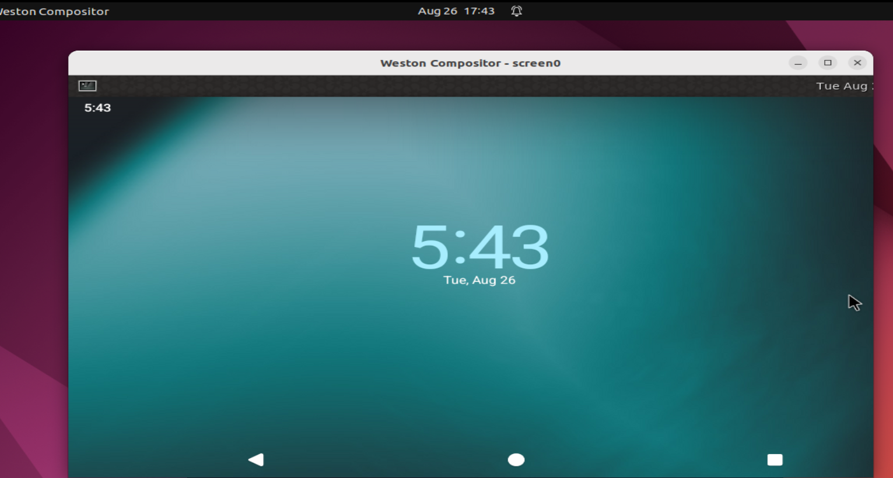

1. waydroid
作用：
Andriod container on any GNU/Linux system like Ubuntu
容器方案
docs：
一些点：
1、The used image is currently based on Android 11 -----> 结论： 安卓部分是不动的，可能很难改动？
疑问： Hos 是否是同样的方式？ 即 Hos的安卓部分是否跟随Google大版本演进？ （有必要的：因为应用会演进）
2、ARM转译层：
如果宿主机是X86_64，自然需要ARM转译层(libhoudini或libndk)的支持才能运行绝大多数手机app ----> 手机不存在这个问题
-疑问：
1、一个屏幕，必然存在的问题：buffer的走向问题------------窗口的渲染数据，底层是给到安卓侧还是linux侧？
教程：
https://zhuanlan.zhihu.com/p/631327119 在Archlinux上使用waydroid运行安卓app 。 注意： 宿主机器 pc linux（x86）
https://docs.waydro.id/usage/install-on-desktops 安装教程
https://zhuanlan.zhihu.com/p/603603346 linux上运行android：waydroid终于安装成功并可上网、安装程序 --------> 验证OK的教程
涉及两个镜像替换：image使用的是 LineageOS编译出来的 -----> 这
TODO 图
安装结果：
点击

源码：
注意点：
TODO 图
1.1. TODO
TODO：可以自己编译 waydroid适配层吗？hwc
TODO：自然img可以自己编译
1.2. 安装遇到的问题：
1.2.1. Waydroid session fails to start
https://github.com/waydroid/waydroid/issues/294
解决办法----------取消waydroid的硬件加速：
Disabling hardware acceleration in /var/lib/waydroid/waydroid_base.prop by setting
ro.hardware.gralloc=default
ro.hardware.egl=swiftshader
2. LineageOS
源码：
cd ~/android/lineage
repo init -u https://github.com/LineageOS/android.git -b lineage-16.0
repo sync
注：这里的lineage-16.0是分支名,对应Android 9.0。更多分支请浏览：https://github.com/LineageOS/android
cd device/xiaomi
git clone https://github.com/LineageOS/android_device_xiaomi_chiron -b lineage-16.0 chiron
参考：https://www.cnblogs.com/luoyesiqiu/p/10701419.html 自己动手编译Android(LineageOS)源码